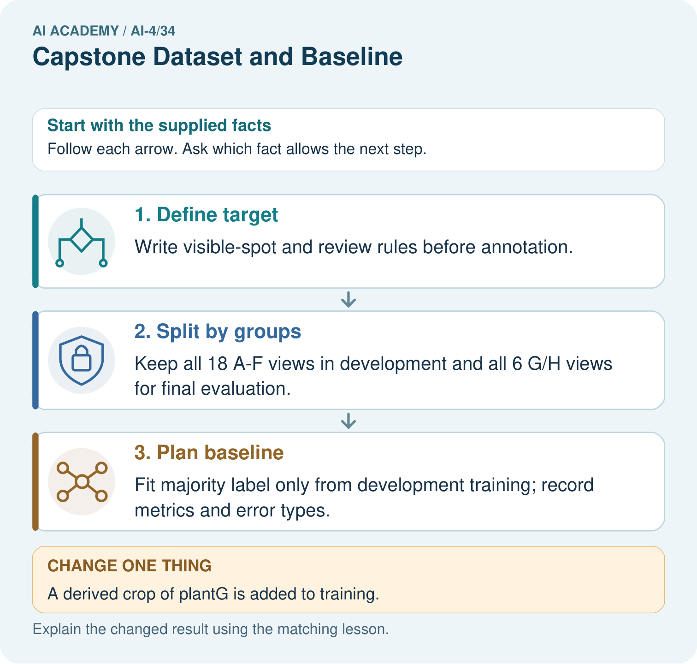
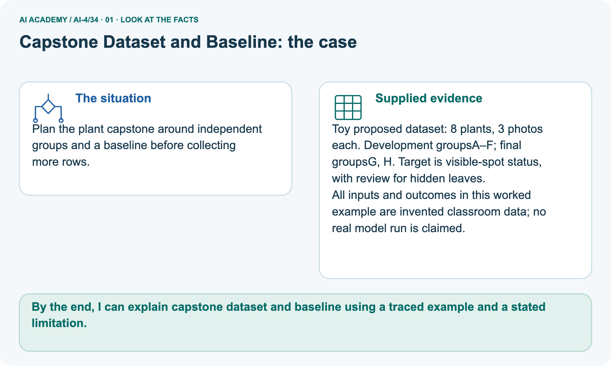
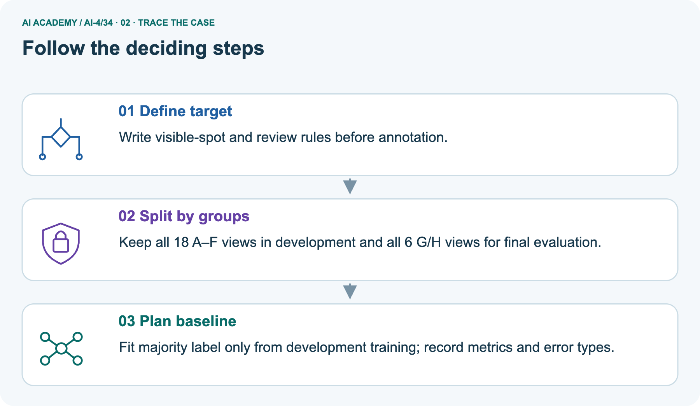
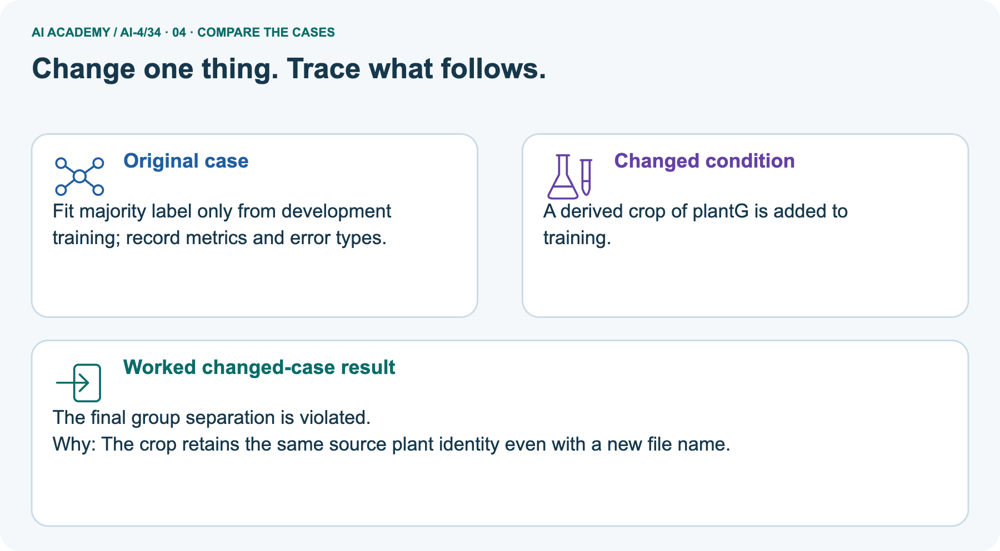
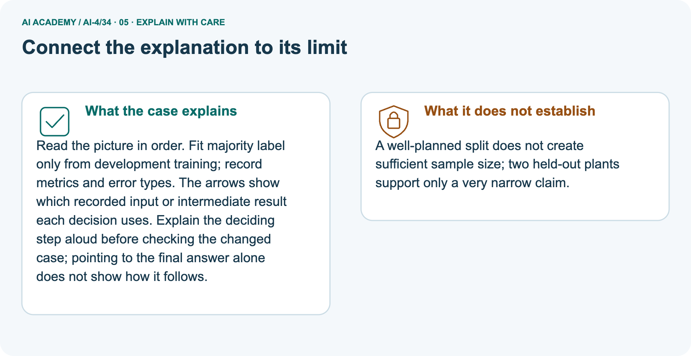

AI Academy · Level 4 · Grade 9 · Week 34 · Workbook
Capstone Dataset and Baseline
Learn to understand, design, build, test and explain AI systems responsibly.
Project: Responsible Plant Classifier
THE CONNECTED WEEK
One capstone design-and-baseline evidence record.
Define fields,audit source groups and preserve actual validation outputs.
Keep one habit: W1–W3/W5 → selected pair-plan task → exact project data bundle → Week35comparison.
Main lesson · Section 1
Recall · Retrieve before notes
Keep this task’s complete inputs, stated rule and support record together.
Task and evidence record
Try the recall before opening notes. Then use a different colour or a labelled second line to correct your explanation.
Without opening the old lesson, explain one key idea from Model Cards and Human Review. Give an example and a mistake that the idea helps you avoid.
Without opening the old lesson, explain one key idea from Subgroup Performance. Give an example and a mistake that the idea helps you avoid.
Without opening the old lesson, explain one key idea from Learning Curves. Give an example and a mistake that the idea helps you avoid.
Model Cards and Human Review
Subgroup Performance
Learning Curves
Main lesson · Section 12
W1 · Explain the mechanism
Keep this task’s complete inputs, stated rule and support record together.
Task and evidence record
Actual72-record kit:40 training parcels(22 clear/18 blocked), 20 validation(9 clear/11 blocked), 12 finalfeature-only rows; singletonsourcegroupIDs P00–P71. Train-majority clear givesvalidation 9/20=45%, blockedfound 0/11; positiveprecision unavailable. Student full CSV/program has blank finalreferences. IDs/groups/splits are metadata, width/heightcm candidatefeatures.
Separate illustrative 30 clear/10 blockedtraining and 14/6 validation givesbaseline 70%, candidate 80%; those are not actual kit scores. Picture8 plants×3 views=24, developmentA–F18 views, finalG/H6 views, with training/validationinside development still to be specified.
Write a bounded question and a non-use statement for the supplied task.
Main lesson · Section 13
W2 · Trace the current experiment
Keep this task’s complete inputs, stated rule and support record together.
Task and evidence record
Actual72-record kit:40 training parcels(22 clear/18 blocked), 20 validation(9 clear/11 blocked), 12 finalfeature-only rows; singletonsourcegroupIDs P00–P71. Train-majority clear givesvalidation 9/20=45%, blockedfound 0/11; positiveprecision unavailable. Student full CSV/program has blank finalreferences. IDs/groups/splits are metadata, width/heightcm candidatefeatures.
Separate illustrative 30 clear/10 blockedtraining and 14/6 validation givesbaseline 70%, candidate 80%; those are not actual kit scores. Picture8 plants×3 views=24, developmentA–F18 views, finalG/H6 views, with training/validationinside development still to be specified.
Explain why record ID, group ID and measured width have different roles.
Main lesson · Section 14
W3 · Repair the reasoning
Keep this task’s complete inputs, stated rule and support record together.
Task and evidence record
Actual72-record kit:40 training parcels(22 clear/18 blocked), 20 validation(9 clear/11 blocked), 12 finalfeature-only rows; singletonsourcegroupIDs P00–P71. Train-majority clear givesvalidation 9/20=45%, blockedfound 0/11; positiveprecision unavailable. Student full CSV/program has blank finalreferences. IDs/groups/splits are metadata, width/heightcm candidatefeatures.
Separate illustrative 30 clear/10 blockedtraining and 14/6 validation givesbaseline 70%, candidate 80%; those are not actual kit scores. Picture8 plants×3 views=24, developmentA–F18 views, finalG/H6 views, with training/validationinside development still to be specified.
Name three acceptance criteria that do not require the candidate to win.
Main lesson · Section 16
W5 · Plan the next check
Keep this task’s complete inputs, stated rule and support record together.
Task and evidence record
Actual72-record kit:40 training parcels(22 clear/18 blocked), 20 validation(9 clear/11 blocked), 12 finalfeature-only rows; singletonsourcegroupIDs P00–P71. Train-majority clear givesvalidation 9/20=45%, blockedfound 0/11; positiveprecision unavailable. Student full CSV/program has blank finalreferences. IDs/groups/splits are metadata, width/heightcm candidatefeatures.
Separate illustrative 30 clear/10 blockedtraining and 14/6 validation givesbaseline 70%, candidate 80%; those are not actual kit scores. Picture8 plants×3 views=24, developmentA–F18 views, finalG/H6 views, with training/validationinside development still to be specified.
What should the team do if it cannot obtain a valid untouched final test?
Main lesson · Section 4
Try alone · Selected experiment task
Keep this task’s complete inputs, stated rule and support record together.
Task and evidence record
The selected 80-row/40-related-pair task differs from the kit’s72 single-record parcels. In this task both rows in each pair share one source group, so assign whole pairs to roles and exclude pair ID from predictive inputs. An exact 24/8/8 pair allocation is one possible declared example:48/16/16 rows, provided coverage and intended-use requirements are checked.
No class counts or baseline score are supplied; do not invent them.
A proposed 80-row dataset has 40 related pairs, and the team splits individual rows randomly then uses pair ID as a feature. Revise its plan.
Attempt this case before feedback. Record any help. Earlier examples below are further practice; a case already practised with feedback cannot establish fresh transfer.
Independent case: Apply independently
Main lesson · Section 9
Project · Keep the experiment evidence
Keep this task’s complete inputs, stated rule and support record together.
Task and evidence record
Publish the frozen Plant Classifier design-and-data bundle with version IDs and approval record.
The project change and evidence I will keep
Main lesson · Section 22
Feedback · Repair and return
Keep this task’s complete inputs, stated rule and support record together.
Task and evidence record
Revisit this idea with your teacher after a delay. Familiarity is different from explaining and using it on a changed case.
| Evidence | My record |
|---|---|
| Worked alone / hint / model | |
| First step I repaired and why | |
| New case checked later; date and result | |
| What I can now explain without notes | |
| One remaining question |
Main lesson · Section 10
Finish · Judge your evidence
Keep this task’s complete inputs, stated rule and support record together.
Task and evidence record
- I can explain the mechanism.
- I can show evidence.
- I can handle a changed case.
- I can name a limit.
Mark each as not yet, with help or independently, and attach supporting work.
Teacher review ____________________ Next step ____________________
Reference bank and extra practice
Choose the reference that helps your next step.
Reference · Supported W2 record
Reference · Section 2
Reference · Supported W2 record
Keep this task’s complete inputs, stated rule and support record together.
Task and evidence record
Use W2: Define fields for Capstone data and requirements. Record the answer once; the lesson and workbook refer to the same attempt.
| Given inputs | Procedure I chose | Middle steps | Result and check |
|---|---|---|---|
Extra practice · Individual reasoning check
Reference · Section 3
Extra practice · Individual reasoning check
Keep this task’s complete inputs, stated rule and support record together.
Task and evidence record
Use the worked case for Capstone data and requirements. Proposed explanation: “A final answer is enough”. Decide whether this explanation is supported.
Point to the step or supplied fact that decides; explain your repair if needed.
Reference · Earlier learning target
Reference · Section 5
Reference · Earlier learning target
Keep this task’s complete inputs, stated rule and support record together.
Task and evidence record
A capstone has two views of each of 40 leaves. Specify a 24/8/8 leaf split and baseline procedure. When may final labels be consulted?
Extra practice · Earlier complete case
Reference · Section 6
Extra practice · Earlier complete case
Keep this task’s complete inputs, stated rule and support record together.
Task and evidence record
Capstone has60 independent leaves, several photos per leaf, healthy/spotted labels.
Plan grouping and baseline.
Show your trace, calculation or evidence
Extra practice · Changed case
Reference · Section 7
Extra practice · Changed case
Keep this task’s complete inputs, stated rule and support record together.
Task and evidence record
Your capstone dataset includes duplicate photographs in both training and validation. What should be repaired before measuring the baseline?
My independent answer and reason
Week 34 Test and reflect
Extra practice · Design a revealing test
Reference · Section 8
Extra practice · Design a revealing test
Keep this task’s complete inputs, stated rule and support record together.
Task and evidence record
Create a changed input, boundary case or missing-information case. Write the expected answer or safe response before testing.
| Test record | My evidence |
|---|---|
| Changed input or condition | |
| Expected answer or fallback | |
| Observed result | |
| Why the result occurred |
Extra practice · Earlier transfer
Reference · Section 11
Extra practice · Earlier transfer
Keep this task’s complete inputs, stated rule and support record together.
Task and evidence record
A capstone has two views of each of 40 leaves. Specify a 24/8/8 leaf split and baseline procedure. When may final labels be consulted?
Record support used: none, hint or teacher explanation.
Reference · Earlier W4 record
Reference · Section 15
Reference · Earlier W4 record
Keep this task’s complete inputs, stated rule and support record together.
Task and evidence record
A proposed 80-row dataset has 40 related pairs, and the team splits individual rows randomly then uses pair ID as a feature. Revise its plan.
Extension · Capstone models and baselines — W1 Build the baseline
Reference · Section 17
Extension · Capstone models and baselines — W1 Build the baseline
Retained extension task with its own values and teacher key.
Extension question and evidence
State the worked training-majority rule and validation accuracy.
Extension · Capstone models and baselines — W2 Evaluate the candidate
Reference · Section 18
Extension · Capstone models and baselines — W2 Evaluate the candidate
Retained extension task with its own values and teacher key.
Extension question and evidence
Compute the worked candidate accuracy, precision and recall.
Extension · Capstone models and baselines — W3 Explain the tradeoff
Reference · Section 19
Extension · Capstone models and baselines — W3 Explain the tradeoff
Retained extension task with its own values and teacher key.
Extension question and evidence
Compare errors rather than only headline accuracy.
Extension · Capstone models and baselines — W4 Apply independently
Reference · Section 20
Extension · Capstone models and baselines — W4 Apply independently
Retained extension task with its own values and teacher key.
Extension question and evidence
Training 18 clear/6 blocked; validation baseline[[9, 0],[3, 0]], candidate[[8, 1],[1, 2]]. Calculate accuracy for each and candidate precision/recall.
Extension · Capstone models and baselines — W5 Freeze evidence
Reference · Section 21
Extension · Capstone models and baselines — W5 Freeze evidence
Retained extension task with its own values and teacher key.
Extension question and evidence
List what must be saved before the teacher releases final-test labels.
Extra practice · Pictured case
Reference · Section 23
Extra practice · Pictured case
Keep this task’s complete inputs, stated rule and support record together.
Task and evidence record
Plan the plant capstone around independent groups and a baseline before collecting more rows.
Toy proposed dataset: 8 plants, 3 photos each. Development groupsA–F; final groupsG, H. Target is visible-spot status, with review for hidden leaves.
All inputs and outcomes in this worked example are invented classroom data; no real model run is claimed.
What provenance field prevents the crop from appearing independent? Point to the relevant step in the picture, then write the changed result and the rule or evidence that supports it.
Support used: alone / hint / worked example. This record is practice evidence.
Project connection: For your Responsible Plant Classifier, save the input, procedure, observed result and limitation of this check.
Label this worked example as practice; use a different, previously unreviewed case when checking independent understanding.



Reference · Project portfolio milestone
Reference · Section 24
Reference · Project portfolio milestone
Keep this task’s complete inputs, stated rule and support record together.
Task and evidence record
Project: Responsible Plant Classifier
Current milestone: Present and defend. Demonstrate the system, explain one failure and justify the next improvement with evidence.
For your Responsible Plant Classifier, save the input, procedure, observed result and limitation of this check.
Label this worked example as practice; use a different, previously unreviewed case when checking independent understanding.
| Evidence to keep | My record |
|---|---|
| This week’s input and deciding step | |
| Prediction and actual result (or labelled paper trace) | |
| One change since the previous checkpoint and why | |
| One error or limit and the next test |
Extra practice · Predict, check and repair
Reference · Section 25
Extra practice · Predict, check and repair
Keep supported feedback separate from the reserved independent case.
First supported question and hint
Plan the plant capstone around independent groups and a baseline before collecting more rows.
Which labelled step matches this detail? Fit majority label only from development training; record metrics and error types.
1. Define target
2. Split by groups
3. Plan baseline
Hint if needed: Read the steps in the pictorial case. Match the supplied detail to the stage that performs or records it.
Practice 1: explain the deciding evidence
Check the first explanation
After your attempt, compare with the supported explanation: Plan baseline Fit majority label only from development training; record metrics and error types. Read the picture in order.
Fit majority label only from development training; record metrics and error types. The arrows show which recorded input or intermediate result each decision uses.
Explain the deciding step aloud before checking the changed case; pointing to the final answer alone does not show how it follows.
Changed-case question and hint
Changed-case practice: A derived crop of plantG is added to training. Which conclusion is supported by the supplied facts?
1. This one example guarantees correct results for every future input.
2. We can decide the result without examining the changed input or the procedure.
3. The final group separation is violated.
Hint if needed: Use the changed condition and the deciding step in the pictorial trace. The answer must say what follows from those facts.
Practice 2: explain the deciding evidence
Check the changed explanation
After your attempt, compare with the supported explanation: The final group separation is violated. The crop retains the same source plant identity even with a new file name.
Repair and keep the record
Review Model Cards and Human Review (ai-4/33). Goal: Write a model card whose claims match evidence. Short practice: Write a bounded replacement for the publicity sentence.
Point to the relevant step in the picture, then write the changed result and the rule or evidence that supports it.. Return to this week and explain what you changed.
Review Subgroup Performance (ai-4/31). Goal: Calculate subgroup results with sample sizes. Short practice: Why should the report retain subgroup rates alongside the total?
Point to the relevant step in the picture, then write the changed result and the rule or evidence that supports it.. Return to this week and explain what you changed.
Review Learning Curves (ai-4/28). Goal: Read training-size learning curves. Short practice: What comparison is valid if the validation set changes between sizes?
Point to the relevant step in the picture, then write the changed result and the rule or evidence that supports it.. Return to this week and explain what you changed.
The browser lab lets you edit the supported Python examples already included in this lesson. Predict first, run, inspect the actual output or error, change one input, then run again.
Keep code, predictions, actual results and a reasoned revision together. On paper, label your result as a trace rather than an execution.
Use Download completed work in the hosted lesson to export your answers, reflections, practice feedback and code-run evidence. Open the HTML copy to read or print it.
Drafts stay in this browser when storage is available; clear drafts on a shared device.
Earlier wording, alternatives and picture transcripts
Use this supported practice once, in the browser or on paper. Keep the reserved independent assessment for a separate first attempt before teacher feedback.
Repair a missing building block
Predict, run and debug
Keep your completed work
Reference · Six-picture response sheets
Reference · Section 26
Reference · Six-picture response sheets
Choose the relevant picture instead of repeating every task.
01. Capstone Dataset and Baseline: the case



Plan the plant capstone around independent groups and a baseline before collecting more rows. Supplied facts: Toy proposed dataset: 8 plants, 3 photos each. Development groupsA–F; final groupsG, H.
Target is visible-spot status, with review for hidden leaves. All inputs and outcomes in this worked example are invented classroom data; no real model run is claimed.
Point to the given fact that matters most. Explain why it matters.
02. Follow the deciding steps



Define target: Write visible-spot and review rules before annotation. → Split by groups: Keep all 18 A–F views in development and all 6 G/H views for final evaluation. → Plan baseline: Fit majority label only from development training; record metrics and error types.
Point to each numbered stage and explain which recorded input it uses.
03. Four-step worked evidence for Week 34: Capstone Dataset and Baseline
![Four-step worked evidence for Week 34: Capstone Dataset and Baseline. 1 | Freeze dataset card v3 and grouped split s2 with no plant identity crossing sets.. 2 | Test set remains sealed; validation supports model choices.. 3 | Validation has 12 healthy and 8 spotted leaves. The always-healthy baseline scores 12/20=60% accuracy and 0/8=0% spotted recall. The rule has TP=5, FN=3, TN=10, FP=2: accuracy 75% and spotted recall 62.5%.. 4 | Acceptance requires valid citations, metric calculations, subgroup review, and safe escalation.](../assets/academy-story-ai-4-34-03.png)

Four-step worked evidence for Week 34: Capstone Dataset and Baseline. 1 | Freeze dataset card v3 and grouped split s2 with no plant identity crossing sets.. 2 | Test set remains sealed; validation supports model choices.. 3 | Validation has 12 healthy and 8 spotted leaves.
The always-healthy baseline scores 12/20=60% accuracy and 0/8=0% spotted recall.
The rule has TP=5, FN=3, TN=10, FP=2: accuracy 75% and spotted recall 62.5%.. 4 | Acceptance requires valid citations, metric calculations, subgroup review, and safe escalation.
Read the labels and values. Explain the relationship the model shows.
04. Change one thing. Trace what follows.



Original case: Fit majority label only from development training; record metrics and error types. Changed condition: A derived crop of plantG is added to training. Expected result: The final group separation is violated.
Reason: The crop retains the same source plant identity even with a new file name.
Predict before checking the worked changed-case result. Name what changed and what the supplied facts allow you to conclude.
05. Connect the explanation to its limit



Read the picture in order. Fit majority label only from development training; record metrics and error types. The arrows show which recorded input or intermediate result each decision uses.
Explain the deciding step aloud before checking the changed case; pointing to the final answer alone does not show how it follows.
Limit: A well-planned split does not create sufficient sample size; two held-out plants support only a very narrow claim.
Explain the case, then point to a limit on the claim.
06. Make the idea visible in your project


For your Responsible Plant Classifier, save the input, procedure, observed result and limitation of this check.
Label this worked example as practice; use a different, previously unreviewed case when checking independent understanding. Draw your input, deciding step, result and limit.
Supported question: What provenance field prevents the crop from appearing independent? Point to the relevant step in the picture, then write the changed result and the rule or evidence that supports it.
Draw your project trace and justify the deciding step using evidence.